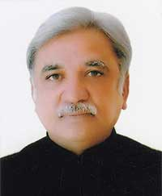

Election Commissioner
|
Shri Sunil AroraSh. Sunil Arora took charge as Election Commissioner of India on 1st September 2017. He is a retired civil servant (IAS, 1980 batch) belonging to the Rajasthan cadre. Sh. Arora brings rich leadership experience of over 35 years heading key departments while driving governance and policy reform initiatives both at Government of India (GOI) and State levels.
Sh. Arora served as Secretary to GOI in the Ministry of Information & Broadcasting (I&B) where he spearheaded several initiatives including curation, restoration and preservationof feature and non-features films through digitisation, review of film certification framework via the Shyam Benegal Committee, breaking the stalemate at FTII, an extensive I&B cadre review, and digitisation of cable space to name a few.
His stint at I&B was preceded by a one-year term as Secretary to GOI in the then-newly formed Ministry of Skill Development & Entrepreneurship (MSDE). In addition to consolidating the new Ministry, Sh. Arora steered the formulation and design of National Policy for Skill Development and Entrepreneurship 2015 and established the National Skill Development Mission in a record period of 8 months. Both initiatives were launched by Hon'ble Prime Minister in July 2015. He also led the design and implementation of Pradhan Mantri Kaushal Vikas Yojana (PMKVY), MSDE's Flagship Skill Training scheme, launched by Hon'ble Prime Minister in July 2015, while vigorously pushing for the implementation of the National Skill Qualification Framework (NSQF) to align different skills and proficiency levels. Sh. Arora led the administrative and policy reforms to revitalise the then Indian Airlines as its Chairman & Managing Director from 2000-2005 – first two years of which overlapped with his tenure as Joint Secretary in Ministry of Civil Aviation. It was during this time that besides showing all round improvement in the passenger services and on time performance, Indian Airlines registered a net profit during 2003-04 and 2004-05 after many years. The overall revenues went up from Rs.3700 crores to Rs.5100 crores with the same number of Aircraft. As Joint Secretary he was tasked to look after security, Airports Authority of India, domestic air transport and Pawan Hans etc. It was during this period that the Union Government took the crucial decision to deploy CISF for security purposes at airports and being Joint Secretary, Sh. Arora played a key role in getting this transition operationalised on the ground. Just before joining MSDE in Delhi in 2014, he served as Additional Chief Secretary (Home) to Government of Rajasthan driving formulation of policy, strategy, governance and regulation for key sectors including Civil Defence, Civil Aviation, Home Guards and Jail Administration, etc. Prior to that, he was focussing on Industries as Additional Chief Secretary as well as Chairman of the Rajasthan State Industrial and Investment Corporation (RIICO) from 2005-2013. Aside from being a key proponent for the Rajasthan State Industrial Policy, Sh. Arora has been on the board of various corporate entities, such as Barmer Mining and Lignite Company, Mahindra SEZ, and Rajasthan State Mines and Minerals Limited. He oversaw the development of the Japanese Zone in Neemrana (Alwar), leading to the establishment of various manufacturing units in the State for instance Honda. Sh. Arora was the Principal Staff Officer of Chief Minister, Rajasthan from 2005-2009 as well as from 1993-1998. His district postings spanned from 1985-1993 as Collector and District Magistrate for Dholpur, Alwar, Nagaur, and Jodhpur.
Sh. Arora retired in April 2016, following which he was appointed as an Advisor to Prasar Bharti followed by Director General & CEO of the Indian Institute of Corporate Affairs.
He is a graduate and postgraduatein English from Punjab University.
|